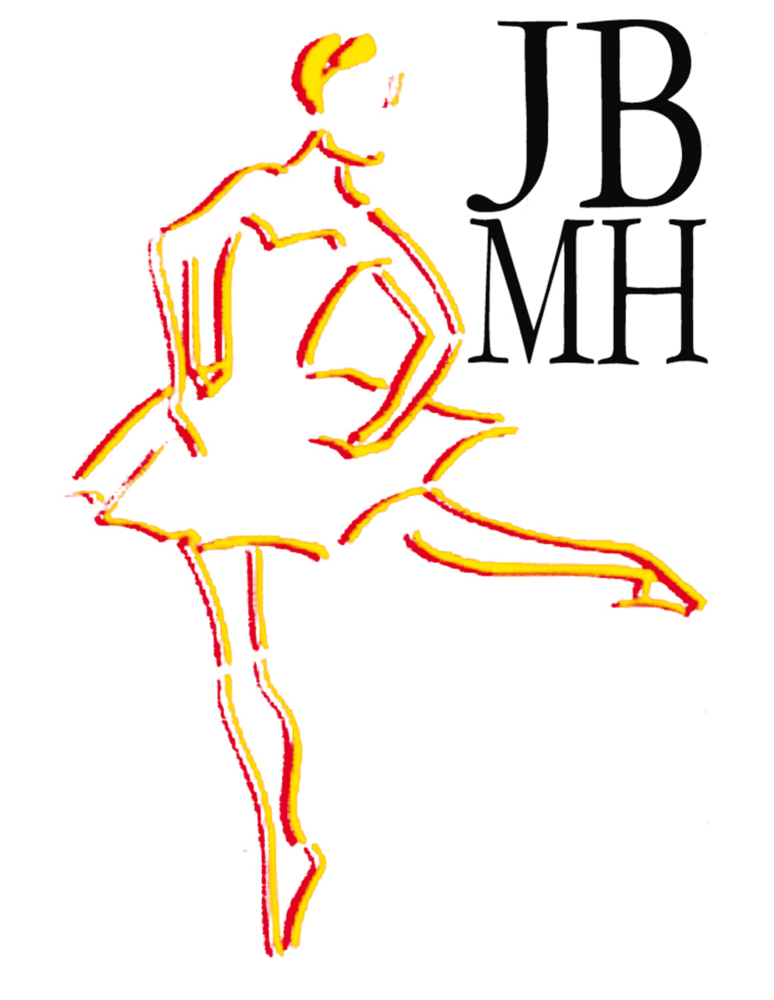

Le Jeune Ballet de Montpellier Hérault s'est joint à Endimione pour réaliser FUSION.
Le Jeune Ballet de Montpellier et de l'Hérault a été créé pour former de jeunes danseurs à la scène et les préparer aux concours. Toujours beaucoup de travail pour les classes intensives en vue des meilleurs concours qui auront lieu tout au long de l'année. La rencontre avec des professeurs et des chorégraphes de renommée internationale, connus durant notre parcours professionnel, enrichit la formation des jeunes danseurs du JBMH. Après Elisa Mestres, Volodia Fernandez et Morgane Mineau, d'autres élèves sont proches de l'envol... Nous ne sommes que des artisans. Former des enfants à la danse classique et jusqu'au professionnalisme prend du temps, mais quel bonheur lorsqu'ils y parviennent ! (tiré du site de la compagnie)
Les dénommées sont : Maëly FREDIER, Léna GRIFFE, Anaelle-Jade M'DALLAL, Mila OLIVE, Isa PAINVIN, Coline PALAT, Anaëlle TANNE, Lucie TOULLEC
L'ensemble vocal d'Endimione a chanté pour FUSION. Mais, pour changer de ses précédentes représentations, le choeur a aussi dansé ! Il a ainsi pu apporter un souffle de renouveau à sa prestation, qui impressionne déjà bon nombre de spectateurs.
Ensemble vocal d'Endimione :
- Sopranos – Christine CATHALA, Fabienne, COULEAU, Annie DARNAUDET, Marion FOURTANIER, Marie-Andrée MAFFRE, Mireille MELI, Michelle MONTACIE, Aline RIDEAU
- Altos – Michèle BABEC, Bernard COULEAU, Guillaume DE BARBA, Hélène GRACIA, Agnès KOVACS, Claire-Lise RAYNAUD
- Ténors – Gilbert ALBAREDE, Pierre BODIN, Denis DARNAUDET, Alexandre MALAVAL, Michel SARRAILH, Alain TRIOU
- Basses – Didier ANSELME-MOIZAN, Bernard BOULOC, Jean-Côme CHARPENTIER, Marc DUCRET, Dominique MARMION, Barry PETERS, Daniel SEGUIGNES, Jean-Claude VERCRUISSE